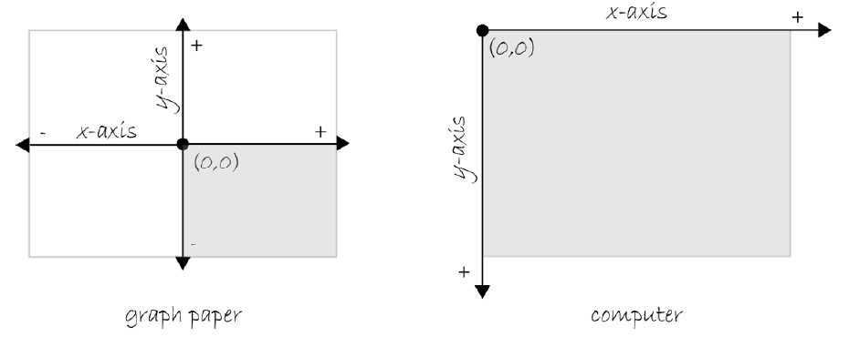
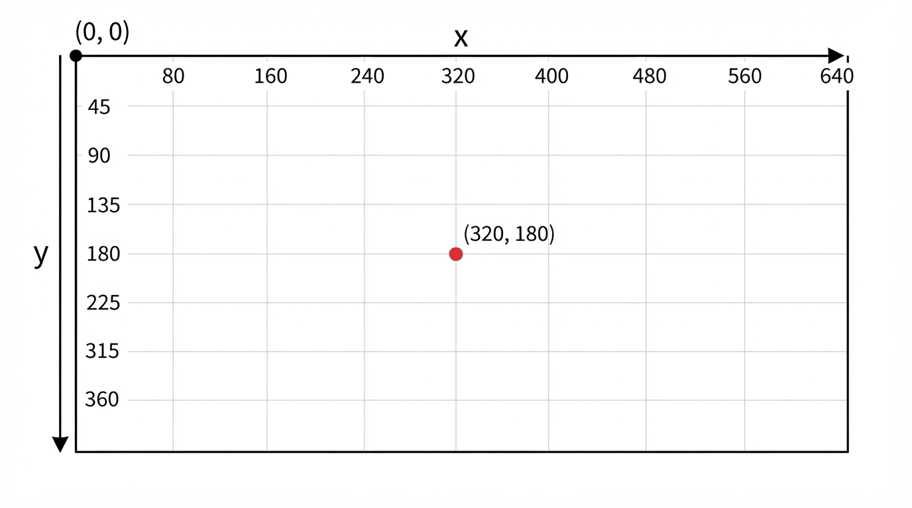

00 — Getting Started: How Computer Graphics Work
The coordinate system
To draw anything, code needs a way to say where on the canvas it goes. p5 (like almost every
computer graphics system) uses a coordinate system with two numbers, x and y, that
together pinpoint one location:
xis the distance across, measured from the left edge. It increases as you move right.yis the distance down, measured from the top edge. It increases as you move down the canvas.- The point
(0, 0)— where both are zero — is the top-left corner of the canvas.
createCanvas(640, 360);
circle(320, 180, 50); // centred in the middle of the canvas
circle(0, 0, 50); // centred on the top-left corner
circle(640, 360, 50); // centred on the bottom-right cornerIf you've done coordinate geometry in maths, this will feel almost right and subtly wrong: maths
graphs usually put (0, 0) at the bottom-left, with y increasing upward. Screen coordinates
flip the y axis — y grows downward instead. This isn't a p5 quirk; it comes from how early
displays drew images one row at a time starting from the top, and it has stuck ever since. It's
worth deliberately unlearning the maths-graph instinct now, because every position, every
movement, and every collision check in this module depends on y meaning "down".

Figure: graph paper (left) puts the origin in the middle, with both axes running in the
"expected" mathematical directions and negative values in three of the four quadrants; a computer
screen (right) puts the origin at the top-left corner, with x and y both only ever positive,
and y increasing downward.

Figure: a diagram of a 640×360 canvas with the origin (0, 0) marked at the top-left corner, an
arrow labelled x pointing right, an arrow labelled y pointing down, and a point plotted at
(320, 180).